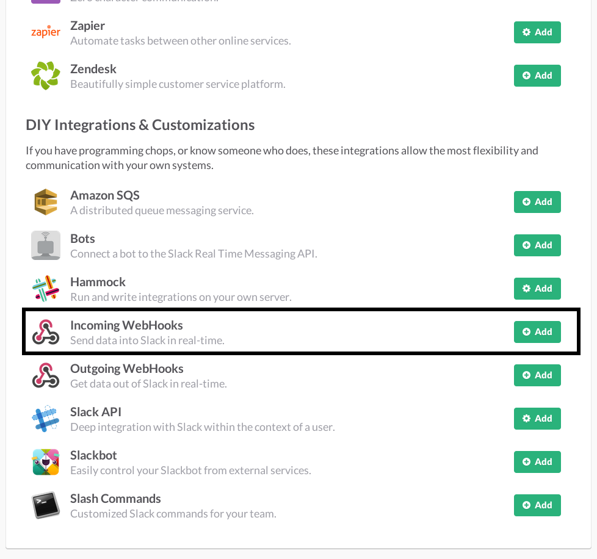

Slack integration
Slack is a platform for team communication.
First things first, Slack is a huge platform with lots of features. Integration will always take time so please be patient. If you need a specific integration and you feel ready to get out your machete and start cutting into the taiga, please review our API Docs.
If you need help with a specific feature, you can always get in touch with our community through our mailing list
1. Configure Slack
Go to your slack app
Go to Configure Integrations.

Add a new "Incoming WebHooks" integration. 
Choose a channel and click Add Incoming WebHooks Integration.

Copy your Webhook URL.

2. Configure Taiga
In your project in Taiga:
Go to Admin > Contrib plugins > Slack

Set the Slack webhook url to the copied value in the previous step.
You can also set the Slack channel which your project will post to. Leave the field blank if you wish to post to the default channel.

Save your configuration.